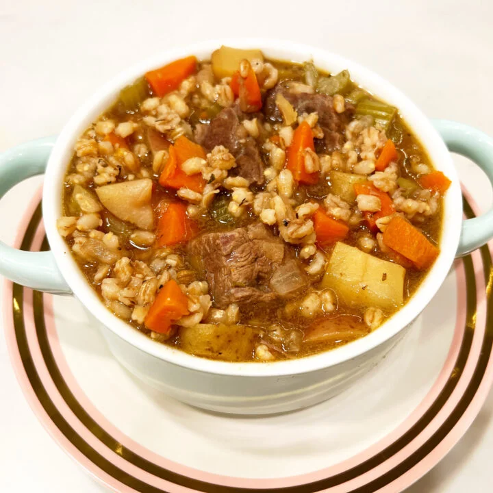

Beef and Barley Soup

The Instant Pot cooks meats and grains beautifully and to tender perfection.
Therefore, it only makes sense to combine the two and churn out a big pot of the most outrageous Beef & Barley Soup you've ever known.
This is a very popular recipe from my first (orange) cookbook.
2 bay leaves
2 tablespoons extra virgin olive oil
-
1 yellow onion, diced
-
1 large (or 2 medium) carrots, peeled and diced
-
2 ribs celery, sliced into 1/4-inch pieces
-
2 pounds chuck meat, cut into chunky (yet bite-size) cubes
-
6 cloves (2 tablespoons) garlic, minced
-
6 cups beef broth
-
1 tablespoon Worcestershire sauce
-
1 1/2 tablespoons seasoned salt
-
2 teaspoons dried thyme
-
1 teaspoon black pepper
-
1 pound baby or fingerling potatoes, skins-on and quartered/roughly chopped
-
2 bay leaves
-
Add the olive oil to the Instant Pot, hit Sauté and Adjust so it's on the More or High setting.
After 3 minutes of the oil heating, add the onion, carrot and celery.
Sauté for about 5 minutes, until it softens just a bit.
-
Add the beef and garlic and sauté for another 2-3 minutes, until the beef is lightly browned on the edges.
-
Add the broth, barley, Worcestershire sauce, seasoned salt, thyme and black pepper.
Use a wooden spoon to give it a good stir, scraping any browned bits up from the bottom of the pot.
Top with the potatoes and bay leaves.
-
Secure the lid, move the valve to the sealing position, hit Cancel and then hit Manual or Pressure Cook for 20 minutes.
When done, allow a 15-minute natural release (meaning you do nothing for 15 minutes) followed by a quick release.
-
Ladle into bowls and serve with some bread (be it crusty French/Italian or garlic knots)!